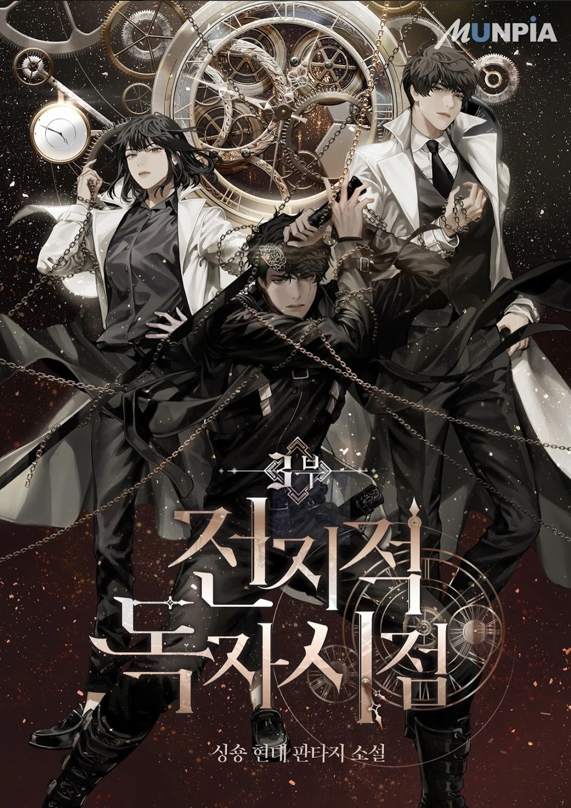

Web Novel / Manwha
Omniscient Reader's Viewpoint
Omniscient Reader’s Viewpoint follows Kim Dokja, the only person who finishes reading the novel Three Ways to Survive in a Ruined World. When the novel’s events become reality, his knowledge becomes crucial to survival. Alongside Yoo Joonghyuk and his companions, Kim Dokja faces dangerous scenarios and life-or-death challenges while trying to change the story’s original ending and destroy the Star Stream.
Read More